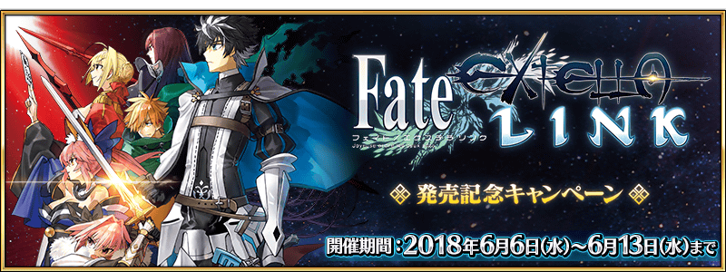
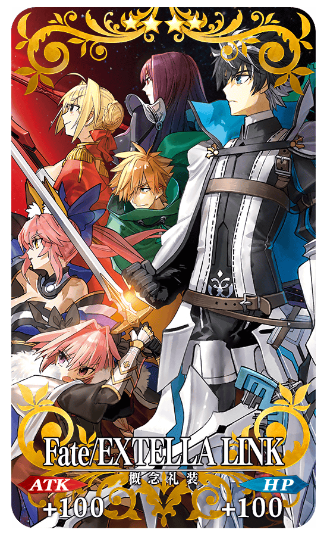
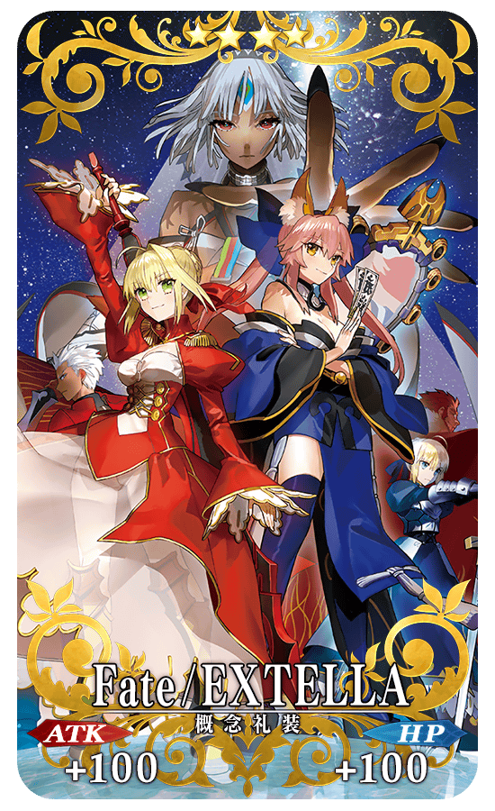
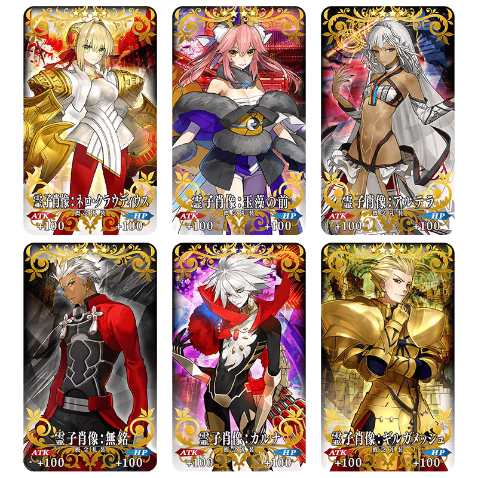
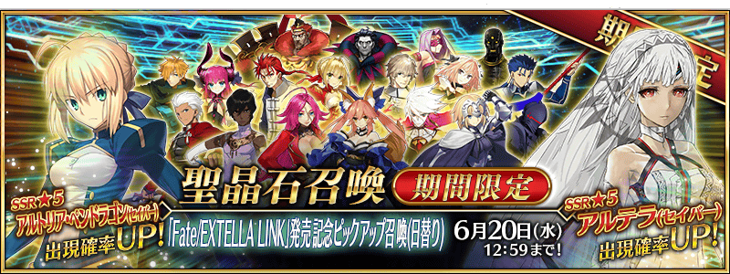
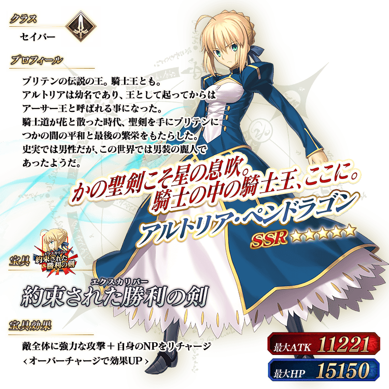
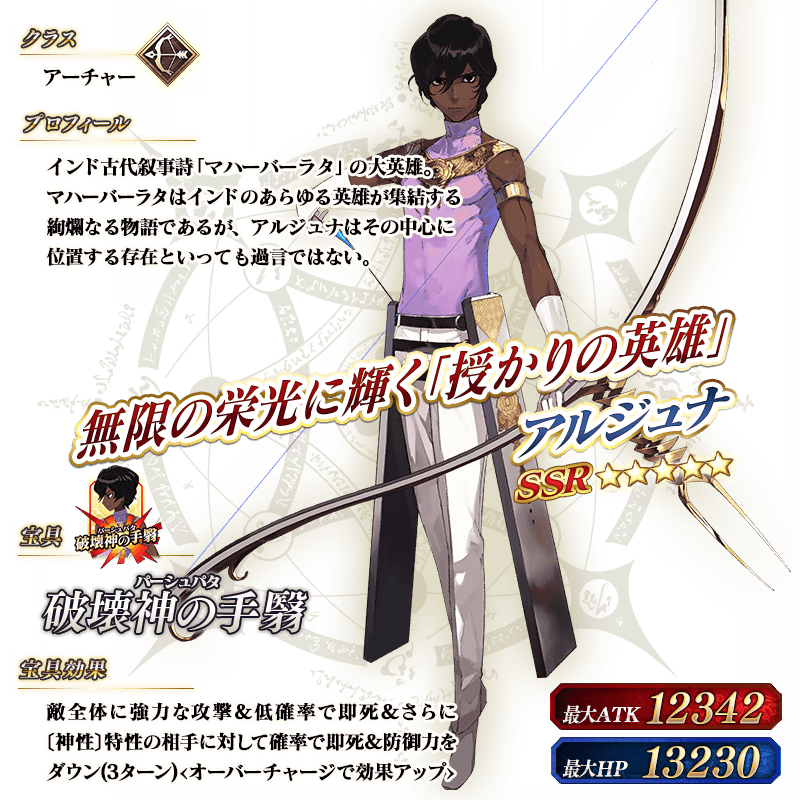
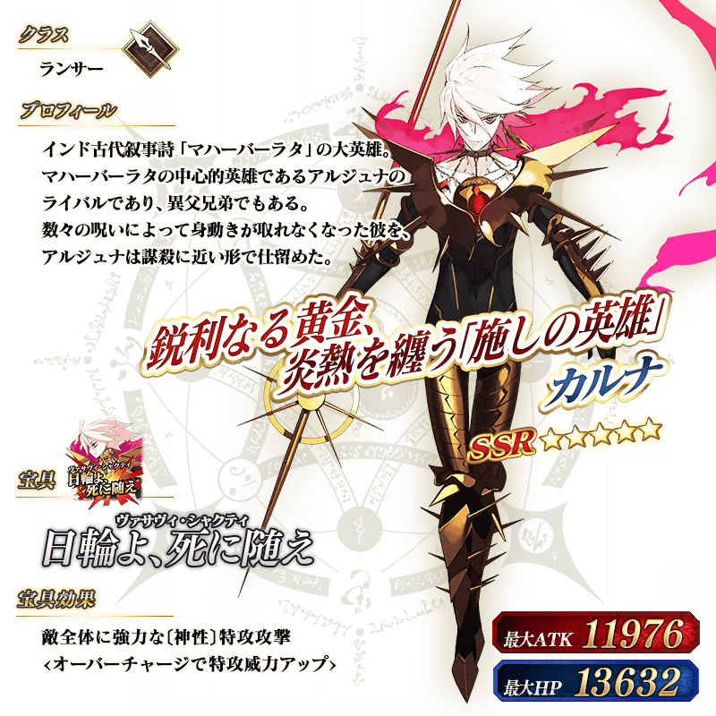
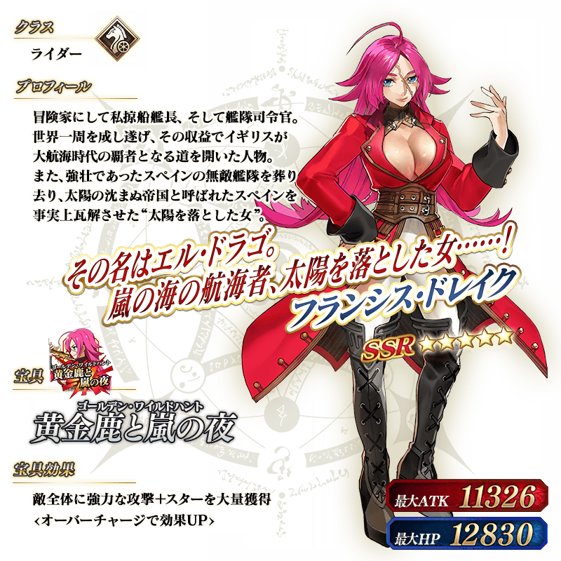
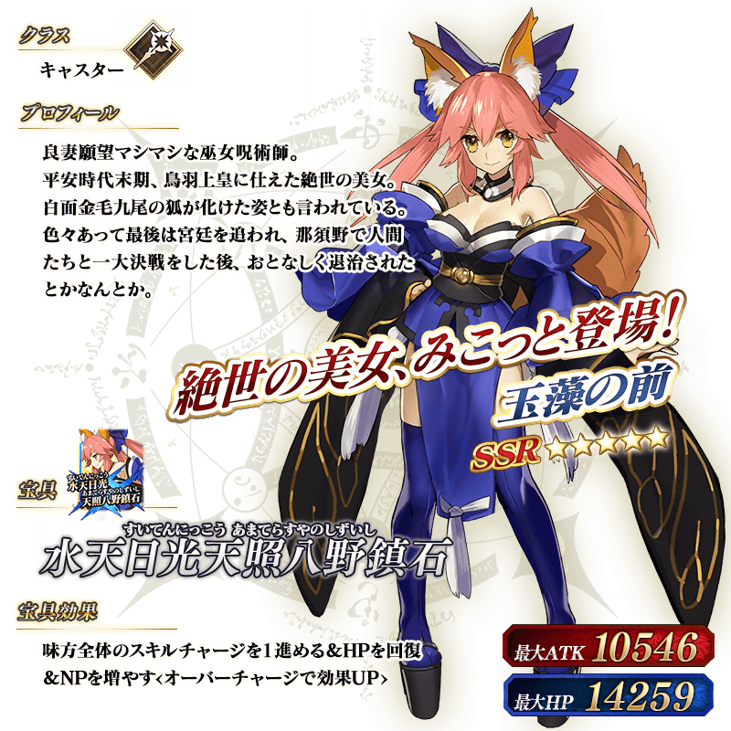

為了記念「Fate/EXTELLA LINK」的發售，舉辦「Fate/EXTELLA LINK」發售記念宣傳活動！
◆舉辦期間◆
2018年6月6日(三) 17:00～6月13日(三) 11:59
通過迦勒底之門在下述期間中出現的「Fate/EXTELLA LINK」發售記念關卡，得到關卡限定的概念禮裝吧！
◆舉辦期間◆
2018年6月6日(三) 17:00～6月13日(三) 11:59
◆關卡開放條件◆
通過「特異點F 炎上汙染都市 冬木」的Master對象
◆「Fate/EXTELLA LINK」發售記念關卡限定概念禮裝◆
|  |
★★★★SR |
※請注意「Fate/EXTELLA LINK」發售記念關卡並無冒險部份。
下述的期間中，與「Fate/EXTELLA LINK」關連的Servant對象，幕間物語及強化關卡的AP消耗量變成1/2。
※請注意曜日關卡為對象外。
※在戰鬥中撤退的情況AP的消耗也是1/2。
◆舉辦期間◆
2018年6月6日(三) 17:00～6月13日(三) 11:59
◆對象Servant(幕間物語)◆
| 職階 | 稀有度 | Servant名 |
|---|---|---|
| Saber | ★★★★★ | 阿提拉 |
| ★★★★★ | 阿爾托莉亞・潘德拉剛 | |
| ★★★★ | 高文 | |
| ★★★★ | 尼祿・克勞狄烏斯 | |
| Archer | ★★★★★ | 阿周那 |
| ★★★★★ | 吉爾伽美什 | |
| ★★★★ | Emiya | |
| ★★★ | 羅賓漢 | |
| Lancer | ★★★★★ | 迦爾納 |
| ★★★★★ | 斯卡哈 | |
| ★★★★ | 伊莉莎白・巴托里 | |
| ★★★★ | 李書文 | |
| ★★★ | 庫・夫林 | |
| Rider | ★★★★★ | 伊斯坎達爾 |
| ★★★★★ | 弗朗西斯・德雷克 | |
| ★★★★ | 阿斯托爾福 | |
| ★★★ | 美杜莎 | |
| Caster | ★★★★★ | 玉藻前 |
| ★★★ | 吉爾・德・雷 | |
| Berserker | ★★★★ | 蘭斯洛特 |
| ★★★ | 大流士三世 | |
| ★★★ | 呂布奉先 | |
| Ruler | ★★★★★ | 貞德 |
◆對象Servant(強化關卡)◆
| 職階 | 稀有度 | Servant名 |
|---|---|---|
| Archer | ★★★★ | Emiya |
| ★★★ | 羅賓漢 | |
| Lancer | ★★★★★ | 迦爾納 |
| ★★★★ | 伊莉莎白・巴托里 | |
| Rider | ★★★★ | 阿斯托爾福 |
| ★★★ | 美杜莎 | |
| Caster | ★★★ | 吉爾・德・雷 |
| Berserker | ★★★★ | 蘭斯洛特 |
| ★★★ | 呂布奉先 |
在達文西工房的「稀有稜鏡交換」追加下述的新道具。
◆追加時間◆
2018年6月6日(三) 17:00～
| 追加道具 | 能交換 次數 |
必需的 稀有稜鏡數 |
|---|---|---|
| Fate/EXTELLA獲得關卡開放權 | 1次 | 3個 |
| 月之海的記憶獲得關卡開放權 | 1次 | 5個 |
| 「Fate/EXTELLA發售記念」限定概念禮裝交換商店開放權 | 1次 | 3個 |
※追加到「稀有稜鏡交換」的概念禮裝獲得關卡為常駐，並無交換期限。
※關於已持有交換對象概念禮裝的玩家，剩餘次數的顯示會是「0次」，無法交換。
※在通過關卡入手、交換商店的限定概念禮裝會是最大等級。
◆Fate/EXTELLA獲得關卡限定概念禮裝◆
介紹能在Fate/EXTELLA獲得關卡入手的概念禮裝「Fate/EXTELLA」。
|  |
★★★★SR |
※請注意Fate/EXTELLA獲得關卡並無冒險部份。
◆月之海的記憶獲得關卡限定魔術禮裝◆
介紹能在月之海的記憶獲得關卡入手可能的魔術禮裝「月之海的記憶」。
※請注意月之海的記憶獲得關卡並無冒險部份。
◆「Fate/EXTELLA發售記念」限定概念禮裝交換商店限定概念禮裝◆
介紹能在「Fate/EXTELLA發售記念」限定概念禮裝交換商店入手可能的概念禮裝「靈子肖像」。
可從全6張的概念禮裝之中，選擇喜愛的1張交換。

★★★★SR
霊子肖像
ATK 100(最大:100) HP 100(最大:100)
技能
通過關卡時獲得的Master經驗值增加50
※概念禮裝的性能皆一致。
※「Fate/EXTELLA發售記念」限定概念禮裝交換商店開放權與稀有稜鏡交換後會發送「EXTELLAチケット」至禮物箱。
與任一張概念禮裝交換後送至禮物箱的「EXTELLAチケット」會消失。


◆「「Fate/EXTELLA LINK」發售記念Pick Up召喚(每日交替)」期間◆
期間:2018年6月6日(三) 17:00～6月20日(三) 11:59
舉辦期間限定「「Fate/EXTELLA LINK」發售記念Pick Up召喚(每日交替)」！
本次是只限一部份「Fate/EXTELLA LINK」關連Servant為Pick Up對象的「Fate/EXTELLA LINK」關連Servant確定召喚。
※召喚對象仍包含概念禮裝。
※請注意未包含期間限定對象的Servant及概念禮裝。
※根據章節進行追加的Servant，就算章節通過前也能入手。
※以每日交替Pick Up的★5(SSR)Servant在Pick Up期間結束後仍會在故事召喚被抽出。
詳情請在聖晶石召喚畫面左下的召喚詳細確認。
Pick Up期間中，Pick Up Servant的出現機率提升！
※請注意只有6月13日(三) 23:00～22:59的期間沒出現機率提升Servant。
10次召喚中確定1張★4(SR)以上和確定1位★3(R)以上的Servant！
※確定★4(SR)以上包含Servant和概念禮裝。
| 每日交替Pick Up期間 | 每日交替Pick Up內容 |
|---|---|
| 6月6日(三) 17:00～22:59 | 阿提拉(Saber) |
| 6月7日(四) 23:00～22:59 | 阿爾托莉亞・潘德拉剛(Saber) |
| 6月8日(五) 23:00～22:59 | 阿周那 |
| 6月9日(六) 23:00～22:59 | 迦爾納 |
| 6月10日(日) 23:00～22:59 | 弗朗西斯・德雷克 |
| 6月11日(一) 23:00～22:59 | 玉藻前(Caster) |
| 6月12日(二) 23:00～22:59 | 貞德(Ruler) |
| 6月13日(三) 23:00～22:59 | 無出現機率提升 ※出現機率為同一稀有度內均等。 |
| 6月14日(四) 23:00～22:59 | 阿提拉(Saber) |
| 6月15日(五) 23:00～22:59 | 阿爾托莉亞・潘德拉剛(Saber) |
| 6月16日(六) 23:00～22:59 | 阿周那 |
| 6月17日(日) 23:00～22:59 | 迦爾納 |
| 6月18日(一) 23:00～22:59 | 弗朗西斯・德雷克 |
| 6月19日(二) 23:00～22:59 | 玉藻前(Caster) |
| 6月20日(三) 23:00～11:59 | 貞德(Ruler) |
※請注意會以每日交替變更Pick Up的Servant。
◆召喚對象★5(SSR)Servant◆
| 職階 | 稀有度 | Servant名 |
|---|---|---|
| Saber | ★★★★★ | 阿提拉 |
| ★★★★★ | 阿爾托莉亞・潘德拉剛 | |
| Archer | ★★★★★ | 阿周那 |
| Lancer | ★★★★★ | 迦爾納 |
| Rider | ★★★★★ | 弗朗西斯・德雷克 |
| Caster | ★★★★★ | 玉藻前 |
| Ruler | ★★★★★ | 貞德 |
◆召喚對象★4(SR)Servant◆
| 職階 | 稀有度 | Servant名 |
|---|---|---|
| Saber | ★★★★ | 高文 |
| ★★★★ | 尼祿・克勞狄烏斯 | |
| Archer | ★★★★ | Emiya |
| Lancer | ★★★★ | 伊莉莎白・巴托里 |
| ★★★★ | 李書文 | |
| Rider | ★★★★ | 阿斯托爾福 |
| Berserker | ★★★★ | 蘭斯洛特 |
※Pick Up期間中，高文、尼祿・克勞狄烏斯(Saber)、李書文就算章節通過前也能入手。
◆召喚對象★3(R)Servant◆
| 職階 | 稀有度 | Servant名 |
|---|---|---|
| Archer | ★★★ | 羅賓漢 |
| Lancer | ★★★ | 庫・夫林 |
| Rider | ★★★ | 美杜莎 |
| Caster | ★★★ | 吉爾・德・雷 |
| Berserker | ★★★ | 大流士三世 |
| ★★★ | 呂布奉先 |
※Pick Up期間中，吉爾・德・雷(Caster)就算章節通過前也能入手。







介紹阿提拉(Saber)、阿爾托莉亞・潘德拉剛(Saber)、阿周那、迦爾納、弗朗西斯・德雷克、玉藻前(Caster)、貞德(Ruler)的寶具演出！
在「Fate/Grand Order」官方網站內的公告中，公開了「★5(SSR)阿提拉(Saber)」「★5(SSR)阿爾托莉亞・潘德拉剛(Saber)」「★5(SSR)阿周那」「★5(SSR)迦爾納」「★5(SSR)弗朗西斯・德雷克」「★5(SSR)玉藻前(Caster)」「★5(SSR)貞德(Ruler)」的寶具演出。敬請確認。